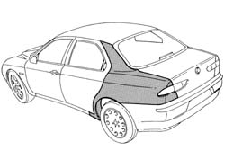
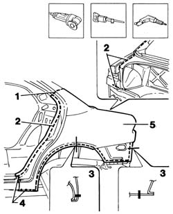
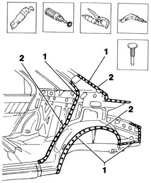
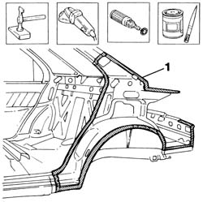
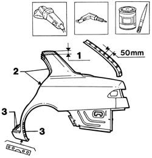
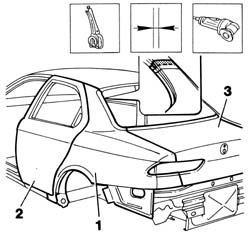
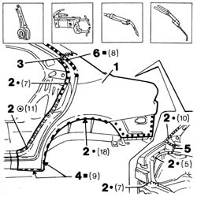
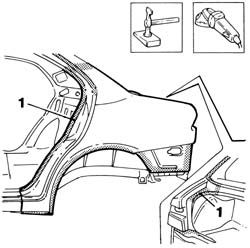
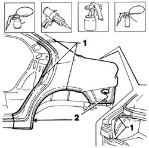

7210E51 left rear wing
- Path
- Procedures > 72 PANELS AND FRAME > 7210 REMOVING REFITTING > 7210E external parts > 7210E51 left rear wing
- Kind
- repair procedure (removal / refitting; the operation number is the code)
- Applies to
- all engines; all production periods
- Interactive page
- https://sloeber94.github.io/elrnDB-a156/en/#/3239052
Applies to: all engines; all production periods
 Removing
Removing
 Refitting
RefittingCheck if any of the connected parts are deformed by checking body alignment dimensions. Use appropriate measurement tools (reference rigs, templates or gauges).
Straighten the body if necessary.

Applies to: all engines; all production periods
1. Use a circular saw to follow the dotted cutting lines shown in the figure.
2. Use a pneumatic saw to follow the dotted cutting lines shown in the figure.
3. Cross-sections of key areas as a guide to allow the operator to adjust cutting position and depth in order to avoid damage to the underlying panels.
4. Drill out the spots shown in the figure.
5. Remove the car's rear wing.

Applies to: all engines; all production periods
Use a vibrating cutter with appropriate blade to remove P.V.C. from the cut end of the rear wing on the car.
Use a rotary brush to remove paint to gain access to the weld spots.
1. Use a chamfering machine to remove the weld spots shown in the figure.
Drill out any weld spots not accessible to the chamfering machine.
Use a chisel and hammer to remove spots ground previously.
2. Remove the cut edge of the wing trim from the car.

Applies to: all engines; all production periods
1. Straighten the door sill seating edges using a mallet and profiled stake.
Use a grinding wheel to remove the weld spot residues.
Use a rotary brush to clean the treated areas.
Apply the electric weld paint finish.

Applies to: all engines; all production periods
1. Cut the wing at the bench. Take care to leave a sufficiently wide section of steel to attach the new part to.
2. Use a rotary brush to remove the corrosion-proof treatment from around the inner and outer edges of the part.
3. Drill out equidistant holes along the lower and side edges of the wing and door seal channel.
Apply electric weld paint finish to the edges to be welded.

Applies to: all engines; all production periods
Refitting
Removing1. Position the part on the car and secure using self-locking clips.
2. Fit the door sealing strip, catch striker and rear door.
3. Fit the sealing strip and boot lid.
Check alignment.
Use a circular saw to cut both panel sections in order to achieve a perfect joint line.
Remove any excess sheet steel and adjustment components from the part.

Applies to: all engines; all production periods
1. Fit the wing to the car and secure using self-locking clips.
2. Use a spot welder to weld the areas shown in the figure.
3. Use a MIG welder to weld the upper wing pillar.
4. Use a MIG welder to fill the holes made previously.
5. Hard-solder between the wing and back window base beam.
6. Fit the seal channel and fill the holes made previously on the part using a MIG welder.

Applies to: all engines; all production periods
Correct any deformations in the panel using a profiled stake and mallet.
1. Use a grinding wheel to level the weld and remove.

Applies to: all engines; all production periods
1. Apply rust-proofing to newly-welded areas.
Seal the joint lines between the part and the car.
Apply paint.
2. Apply wax oil inside the rear wing.
